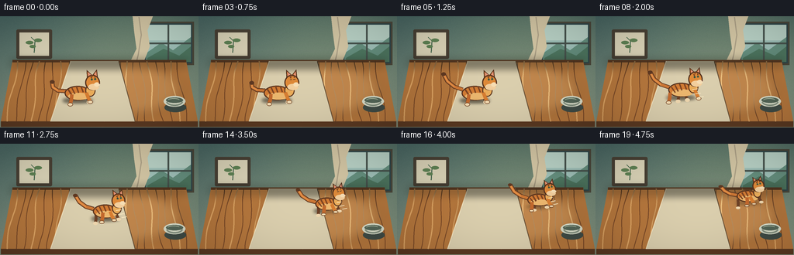
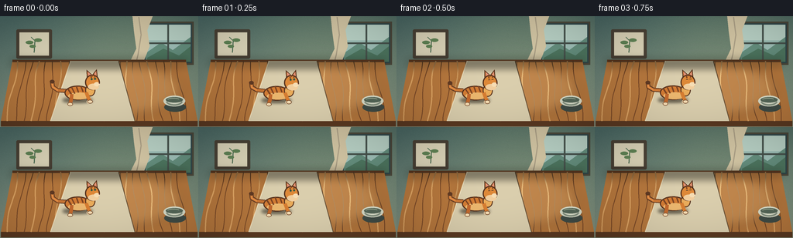
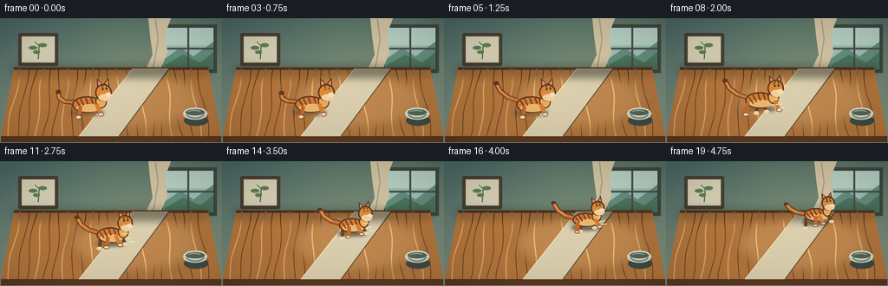
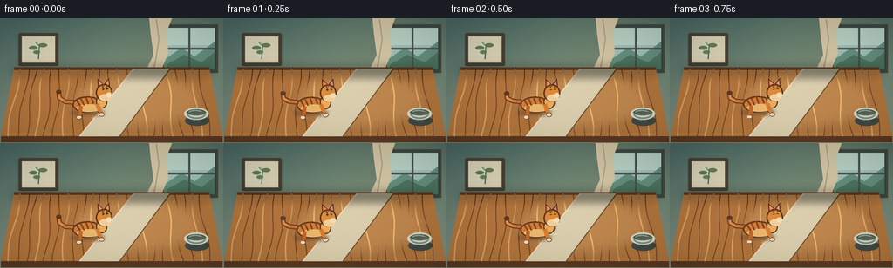

CODING AGENTS AS PIXEL WORLD MODELS
traex/DeepSeek-V4.1-Flash · dynamic_spatial_relationship_0013
点击播放 · 原生 RGB 像素
逐轮保存的候选
回放视频、检查图与代码变化。
每份候选均可单独播放。实际图片检查记录在下方工具轨迹中。
候选 01播放与检查图
点击播放 · 原生 RGB 像素


展开代码变化
--- 上一保存版本
+++ 本次保存版本
@@ -0,0 +1,353 @@
+from __future__ import annotations
+
+import math
+from pathlib import Path
+
+import numpy as np
+from PIL import Image, ImageDraw, ImageFilter
+
+import artifact_io
+
+
+W, H = 256, 144
+SS = 4
+SW, SH = W * SS, H * SS
+FRAMES = 20
+FPS = 4.0
+
+
+def s(value: float) -> int:
+ return int(round(value * SS))
+
+
+def rgba(color: tuple[int, int, int, int]) -> tuple[int, int, int, int]:
+ return color
+
+
+def rounded_line(draw: ImageDraw.ImageDraw, points, fill, width, joint="curve"):
+ draw.line(points, fill=fill, width=s(width), joint=joint)
+ radius = width / 2
+ for x, y in (points[0], points[-1]):
+ draw.ellipse((s(x - radius), s(y - radius), s(x + radius), s(y + radius)), fill=fill)
+
+
+def make_background() -> Image.Image:
+ """Painterly, quiet interior with a clear wooden tabletop."""
+ y = np.linspace(0.0, 1.0, SH, dtype=np.float32)[:, None, None]
+ x = np.linspace(0.0, 1.0, SW, dtype=np.float32)[None, :, None]
+
+ wall_top = np.array([78, 108, 103], dtype=np.float32)
+ wall_bottom = np.array([157, 165, 139], dtype=np.float32)
+ wall = wall_top * (1.0 - y * 0.72) + wall_bottom * (y * 0.72)
+ wall = np.broadcast_to(wall, (SH, SW, 3)).copy()
+
+ light = np.exp(-(((x - 0.72) / 0.45) ** 2 + ((y - 0.22) / 0.65) ** 2))
+ wall += light * np.array([20, 15, 4], dtype=np.float32)
+ wall -= np.array([8, 6, 2], dtype=np.float32) * np.abs(x - 0.5)
+
+ # Subtle wall texture, fixed for the whole shot.
+ rng = np.random.default_rng(1307)
+ grain = rng.normal(0.0, 2.5, (SH, SW, 1)).astype(np.float32)
+ wall += grain
+ base = Image.fromarray(np.clip(wall, 0, 255).astype(np.uint8), "RGB").convert("RGBA")
+ d = ImageDraw.Draw(base, "RGBA")
+
+ # Window at upper right, with soft daylight and restrained curtains.
+ d.rectangle((s(184), s(7), s(250), s(63)), fill=(48, 72, 75, 255))
+ d.rectangle((s(188), s(11), s(246), s(59)), fill=(159, 192, 184, 255))
+ d.rectangle((s(188), s(11), s(246), s(31)), fill=(185, 210, 198, 255))
+ d.polygon(
+ [(s(188), s(48)), (s(208), s(34)), (s(223), s(44)), (s(246), s(27)),
+ (s(246), s(59)), (s(188), s(59))],
+ fill=(101, 143, 126, 255),
+ )
+ d.polygon(
+ [(s(190), s(54)), (s(211), s(42)), (s(231), s(51)), (s(246), s(39)),
+ (s(246), s(59)), (s(190), s(59))],
+ fill=(77, 117, 95, 255),
+ )
+ d.line((s(217), s(11), s(217), s(59)), fill=(71, 83, 77, 255), width=s(2.2))
+ d.line((s(188), s(35), s(246), s(35)), fill=(71, 83, 77, 255), width=s(2.2))
+ d.rectangle((s(184), s(7), s(250), s(63)), outline=(75, 72, 59, 255), width=s(2.2))
+
+ curtain = [(s(171), s(0)), (s(197), s(0)), (s(190), s(18)), (s(193), s(39)),
+ (s(184), s(62)), (s(177), s(71)), (s(165), s(65)), (s(176), s(42)),
+ (s(173), s(20))]
+ d.polygon(curtain, fill=(211, 198, 164, 220))
+ d.line([(s(179), s(1)), (s(182), s(24)), (s(178), s(50)), (s(174), s(66))],
+ fill=(174, 162, 136, 150), width=s(1.4))
+
+ # A small framed botanical print balances the window.
+ d.rounded_rectangle((s(21), s(17), s(67), s(55)), radius=s(2), fill=(73, 65, 53, 255))
+ d.rectangle((s(25), s(21), s(63), s(51)), fill=(218, 211, 183, 255))
+ rounded_line(d, [(s(44), s(47)), (s(45), s(32)), (s(40), s(27))],
+ (73, 106, 80, 255), 1.3)
+ for cx, cy, rx, ry in [(38, 34, 5, 2.2), (49, 31, 5, 2.2), (42, 39, 4, 2)]:
+ d.ellipse((s(cx - rx), s(cy - ry), s(cx + rx), s(cy + ry)),
+ fill=(95, 130, 84, 255))
+
+ # Table silhouette: broad enough for the full running path.
+ back_y = 58
+ front_y = 136
+ table = [(s(16), s(back_y)), (s(240), s(back_y)), (s(255), s(front_y)),
+ (s(1), s(front_y))]
+ d.polygon(table, fill=(181, 119, 61, 255))
+ d.line([(s(16), s(back_y)), (s(240), s(back_y))],
+ fill=(92, 58, 34, 255), width=s(3.2))
+ d.polygon([(s(1), s(front_y)), (s(255), s(front_y)), (s(255), s(143)),
+ (s(1), s(143))], fill=(92, 58, 34, 255))
+
+ # Grain follows the table's perspective rather than the image axes.
+ for i in range(23):
+ t = (i + 0.7) / 24.0
+ xb = 16 + t * 224
+ xf = 1 + t * 254
+ bend = math.sin(i * 1.73) * 5.0
+ points = []
+ for j in range(17):
+ q = j / 16.0
+ xx = xb * (1 - q) + xf * q + math.sin(q * math.pi * 2.1 + i) * 2.0
+ yy = back_y * (1 - q) + front_y * q + bend * math.sin(q * math.pi)
+ points.append((s(xx), s(yy)))
+ tone = (118, 70, 38, 55) if i % 3 else (221, 164, 99, 65)
+ d.line(points, fill=tone, width=s(0.9 if i % 3 else 1.4), joint="curve")
+
+ # Tabletop light pool and warm reflected color.
+ overlay = Image.new("RGBA", (SW, SH), (0, 0, 0, 0))
+ od = ImageDraw.Draw(overlay, "RGBA")
+ od.ellipse((s(80), s(59), s(234), s(130)), fill=(255, 223, 161, 40))
+ overlay = overlay.filter(ImageFilter.GaussianBlur(s(7)))
+ base = Image.alpha_composite(base, overlay)
+ d = ImageDraw.Draw(base, "RGBA")
+
+ # Thin center runner creates a runway toward the back edge.
+ d.polygon([(s(91), s(58)), (s(153), s(58)), (s(174), s(136)), (s(65), s(136))],
+ fill=(219, 207, 174, 72))
+ d.line([(s(91), s(58)), (s(65), s(136))], fill=(241, 226, 190, 92), width=s(1))
+ d.line([(s(153), s(58)), (s(174), s(136))], fill=(102, 79, 54, 50), width=s(1))
+
+ # Small ceramic bowl near the front right, with a restrained highlight.
+ d.ellipse((s(212), s(112), s(240), s(124)), fill=(63, 75, 69, 90))
+ d.ellipse((s(211), s(103), s(239), s(117)), fill=(214, 218, 198, 255))
+ d.arc((s(214), s(104), s(236), s(116)), 8, 170, fill=(132, 145, 128, 255), width=s(2))
+ d.ellipse((s(214), s(105), s(236), s(112)), fill=(84, 102, 87, 255))
+ d.arc((s(216), s(106), s(232), s(111)), 195, 335, fill=(168, 180, 154, 180), width=s(1))
+
+ # Contact shadow along the far edge.
+ shadow = Image.new("RGBA", (SW, SH), (0, 0, 0, 0))
+ sd = ImageDraw.Draw(shadow, "RGBA")
+ sd.rectangle((s(14), s(55), s(242), s(66)), fill=(35, 34, 25, 65))
+ shadow = shadow.filter(ImageFilter.GaussianBlur(s(5)))
+ base = Image.alpha_composite(base, shadow)
+ return base
+
+
+BASE = make_background()
+
+
+def cat_pose(frame: int) -> tuple[float, float, float, float]:
+ """Return center x, ground y, scale, body angle in degrees."""
+ if frame <= 4:
+ # Settled, attentive pause. A tiny weight shift avoids a frozen opening.
+ q = frame / 4.0
+ x = 101.0 + math.sin(q * math.pi) * 1.0
+ y = 105.0 + math.sin(q * math.pi * 2) * 0.35
+ scale = 1.0
+ angle = -7.0 + math.sin(q * math.pi) * 1.2
+ return x, y, scale, angle
+
+ q = (frame - 4) / 15.0
+ # Short crouch, fast departure, and a soft arrival at the rear edge.
+ run_q = min(1.0, max(0.0, (q - 0.10) / 0.90))
+ eased = 0.16 * run_q + 0.84 * (run_q * run_q * (3 - 2 * run_q))
+ x = 101.0 + 96.0 * eased
+ y = 105.0 - 32.0 * eased
+ scale = 1.0 - 0.18 * eased
+ angle = -7.0 - 7.0 * eased
+ return x, y, scale, angle
+
+
+def transform_points(points, cx, cy, scale, angle):
+ a = math.radians(angle)
+ ca, sa = math.cos(a), math.sin(a)
+ out = []
+ for px, py in points:
+ px *= scale
+ py *= scale
+ out.append((s(cx + px * ca - py * sa), s(cy + px * sa + py * ca)))
+ return out
+
+
+def draw_cat(layer: Image.Image, frame: int, cx: float, ground_y: float, scale: float, angle: float):
+ d = ImageDraw.Draw(layer, "RGBA")
+ moving = frame >= 5
+ phase = (frame - 5) / 2.15 * math.pi if moving else 0.0
+
+ # In local cat coordinates, +x is forward and +y is down.
+ def P(points):
+ return transform_points(points, cx, ground_y, scale, angle)
+
+ def ellipse(box, fill, outline=None, width=0):
+ d.ellipse(tuple(s(v) for v in (
+ box[0] * scale + cx, box[1] * scale + ground_y,
+ box[2] * scale + cx, box[3] * scale + ground_y
+ )), fill=fill, outline=outline, width=s(width))
+
+ # A separate ground shadow is deliberately offset toward the viewer.
+ shadow = Image.new("RGBA", (SW, SH), (0, 0, 0, 0))
+ sd = ImageDraw.Draw(shadow, "RGBA")
+ bob = abs(math.sin(phase)) * 0.8 * scale if moving else 0
+ sd.ellipse((s(cx - 20 * scale), s(ground_y + 1.5), s(cx + 18 * scale),
+ s(ground_y + 6.5 - bob)), fill=(47, 40, 28, 92))
+ shadow = shadow.filter(ImageFilter.GaussianBlur(s(2.1)))
+ layer.alpha_composite(shadow)
+ d = ImageDraw.Draw(layer, "RGBA")
+
+ body_bob = -abs(math.sin(phase)) * 1.15 * scale if moving else math.sin(frame * 0.8) * 0.12
+ cy_body = ground_y + body_bob
+
+ def body_ellipse(box, fill, outline=None, width=0):
+ pts = transform_points(
+ [(box[0], box[1]), (box[2], box[1]), (box[2], box[3]), (box[0], box[3])],
+ cx, cy_body, scale, angle
+ )
+ # Draw an ellipse centered in local space and rotate its bounding box corners.
+ x0, y0, x1, y1 = box
+ local_center = ((x0 + x1) / 2, (y0 + y1) / 2)
+ local_rx = (x1 - x0) / 2
+ local_ry = (y1 - y0) / 2
+ ccx = cx + (local_center[0] * scale * math.cos(math.radians(angle))
+ - local_center[1] * scale * math.sin(math.radians(angle)))
+ ccy = cy_body + (local_center[0] * scale * math.sin(math.radians(angle))
+ + local_center[1] * scale * math.cos(math.radians(angle)))
+ d.ellipse((s(ccx - local_rx * scale), s(ccy - local_ry * scale),
+ s(ccx + local_rx * scale), s(ccy + local_ry * scale)),
+ fill=fill, outline=outline, width=s(width))
+
+ # Tail: expressive and mostly held up while running.
+ if moving:
+ sway = math.sin(phase * 0.72) * 4.0
+ tail_pts = [(-15, -12), (-25, -17 + sway * 0.25), (-33, -25 + sway * 0.55),
+ (-37, -35 + sway)]
+ else:
+ sway = math.sin(frame * 0.72) * 2.5
+ tail_pts = [(-15, -10), (-25, -12), (-31, -17 + sway * 0.4),
+ (-31, -24 + sway)]
+ rounded_line(d, P(tail_pts), (96, 58, 35, 255), 5.4)
+ rounded_line(d, P(tail_pts), (204, 119, 53, 255), 3.6)
+ rounded_line(d, P(tail_pts[1:]), (230, 147, 75, 255), 1.6)
+ d.ellipse((*P([(tail_pts[-1][0] - 2.7, tail_pts[-1][1] - 2.7)])[0],
+ *P([(tail_pts[-1][0] + 2.7, tail_pts[-1][1] + 2.7)])[0]),
+ fill=(95, 57, 34, 255))
+
+ # Far legs first, with alternating running poses.
+ if moving:
+ far_swing = math.sin(phase)
+ far_front = 9.5 + far_swing * 6.5
+ far_back = -9.0 - far_swing * 6.5
+ else:
+ far_front, far_back = 10.0, -9.0
+ for x, stride in [(far_back, -3), (far_front, 3)]:
+ paw_x = x + stride
+ rounded_line(d, P([(x, -5), (x + stride * 0.45, 2), (paw_x, 7)]),
+ (108, 65, 39, 255), 3.8)
+ d.ellipse((*P([(paw_x - 2.8, 5.0)])[0], *P([(paw_x + 2.8, 10.5)])[0]),
+ fill=(239, 215, 175, 255))
+
+ # Main body and warm underbelly.
+ body_ellipse((-17, -15, 17, 4), (212, 125, 53, 255), (89, 52, 31, 255), 1.4)
+ body_ellipse((-13, -6, 15, 3), (237, 184, 111, 255))
+
+ # Tabby stripes contour over the rounded body.
+ stripe_data = [(-12, -12, -8, -4), (-7, -14, -4, -5), (-1, -15, 1, -6),
+ (5, -14, 7, -6), (10, -12, 12, -6)]
+ for x0, y0, x1, y1 in stripe_data:
+ rounded_line(d, P([(x0, y0), (x1, y1)]), (126, 69, 35, 235), 1.7)
+
+ # Chest/neck fur, head, ears, and face.
+ body_ellipse((10, -15, 23, 1), (235, 173, 91, 255), (91, 54, 32, 255), 1.3)
+ head_cx = 20.0
+ head_cy = -16.5
+ # Ear triangles.
+ d.polygon(P([(14, -23), (15, -34), (21, -27)]), fill=(208, 119, 50, 255),
+ outline=(82, 48, 29, 255), width=s(1.0))
+ d.polygon(P([(22, -27), (28, -33), (28, -21)]), fill=(208, 119, 50, 255),
+ outline=(82, 48, 29, 255), width=s(1.0))
+ d.polygon(P([(16, -25), (16.5, -31), (20, -27)]), fill=(225, 147, 122, 255))
+ d.polygon(P([(24, -27), (27, -30.5), (26.5, -24)]), fill=(225, 147, 122, 255))
+ body_ellipse((11, -27, 30, -7), (222, 137, 57, 255), (85, 50, 30, 255), 1.4)
+ body_ellipse((14, -15, 28, -7), (243, 207, 158, 255))
+ # Muzzle and nose.
+ d.ellipse((*P([(22.5, -16.8)])[0], *P([(29.0, -10.6)])[0]),
+ fill=(247, 222, 181, 255))
+ d.polygon(P([(28.3, -15.0), (30.2, -15.0), (29.2, -13.8)]),
+ fill=(112, 62, 55, 255))
+ # Eyes and forehead stripes.
+ eye_y = -20.8
+ blink = frame in (2, 3) or (moving and frame in (13, 14))
+ if blink:
+ rounded_line(d, P([(18.7, eye_y), (21.0, eye_y)]), (69, 55, 40, 255), 1.1)
+ rounded_line(d, P([(23.0, eye_y), (25.3, eye_y)]), (69, 55, 40, 255), 1.1)
+ else:
+ d.ellipse((*P([(18.8, eye_y - 1.5)])[0], *P([(21.1, eye_y + 1.3)])[0]),
+ fill=(68, 105, 78, 255))
+ d.ellipse((*P([(23.2, eye_y - 1.5)])[0], *P([(25.5, eye_y + 1.3)])[0]),
+ fill=(68, 105, 78, 255))
+ d.ellipse((*P([(19.5, eye_y - 0.7)])[0], *P([(20.3, eye_y + 0.2)])[0]),
+ fill=(28, 30, 25, 255))
+ d.ellipse((*P([(23.9, eye_y - 0.7)])[0], *P([(24.7, eye_y + 0.2)])[0]),
+ fill=(28, 30, 25, 255))
+ rounded_line(d, P([(19.2, -25.0), (19.8, -22.4)]), (126, 69, 35, 220), 1.4)
+ rounded_line(d, P([(24.4, -25.2), (24.2, -22.8)]), (126, 69, 35, 220), 1.4)
+ rounded_line(d, P([(21.0, -27.0), (21.2, -24.4)]), (126, 69, 35, 220), 1.2)
+
+ # Near legs: bigger and lighter paws, alternating with far legs.
+ if moving:
+ near_swing = -math.sin(phase)
+ near_front = 11.0 + near_swing * 7.2
+ near_back = -8.0 - near_swing * 7.2
+ else:
+ near_front, near_back = 11.0, -8.0
+ for x, stride, shade in [(near_back, -3.5, (195, 105, 46, 255)),
+ (near_front, 3.5, (216, 126, 50, 255))]:
+ knee_x = x + stride * 0.45
+ paw_x = x + stride
+ rounded_line(d, P([(x, -5), (knee_x, 2), (paw_x, 7)]), shade, 4.4)
+ d.ellipse((*P([(paw_x - 3.2, 5.0)])[0], *P([(paw_x + 3.2, 10.6)])[0]),
+ fill=(245, 219, 177, 255), outline=(114, 72, 43, 255), width=s(0.8))
+
+ # Sparse forward motion streaks reinforce the departure without obscuring the cat.
+ if 7 <= frame <= 17:
+ speed = min(1.0, (frame - 6) / 6.0)
+ for i, offset in enumerate([(15, -5), (18, 1), (21, 6)]):
+ alpha = int(30 * speed * (1.0 - i * 0.16))
+ start = P([(offset[0], offset[1])])[0]
+ end = P([(offset[0] + 7.0, offset[1])])[0]
+ d.line((start, end), fill=(255, 237, 197, alpha), width=s(1.1))
+
+
+def render_frame(frame: int) -> np.ndarray:
+ layer = BASE.copy()
+ cx, gy, scale, angle = cat_pose(frame)
+ draw_cat(layer, frame, cx, gy, scale, angle)
+
+ # Gentle exposure lift near the subject and a low-contrast vignette.
+ arr = np.asarray(layer.convert("RGB"), dtype=np.float32)
+ yy, xx = np.mgrid[0:SH, 0:SW]
+ nx = (xx - SW * 0.52) / (SW * 0.58)
+ ny = (yy - SH * 0.53) / (SH * 0.60)
+ vignette = np.clip(1.0 - 0.12 * (nx * nx + ny * ny), 0.84, 1.0)[..., None]
+ arr *= vignette
+ out = Image.fromarray(np.clip(arr, 0, 255).astype(np.uint8), "RGB")
+ out = out.resize((W, H), Image.Resampling.LANCZOS)
+ return np.asarray(out, dtype=np.uint8)
+
+
+def main():
+ frames = np.stack([render_frame(i) for i in range(FRAMES)])
+ artifact_io.save(frames, Path(__file__).resolve().parent)
+ print(f"saved {FRAMES} frames at {W}x{H}, {FPS:g} fps")
+
+
+if __name__ == "__main__":
+ main()
候选 02播放与检查图
点击播放 · 原生 RGB 像素


展开代码变化
--- 上一保存版本
+++ 本次保存版本
@@ -49,7 +49,7 @@
rng = np.random.default_rng(1307)
grain = rng.normal(0.0, 2.5, (SH, SW, 1)).astype(np.float32)
wall += grain
- base = Image.fromarray(np.clip(wall, 0, 255).astype(np.uint8), "RGB").convert("RGBA")
+ base = Image.fromarray(np.clip(wall, 0, 255).astype(np.uint8)).convert("RGBA")
d = ImageDraw.Draw(base, "RGBA")
# Window at upper right, with soft daylight and restrained curtains.
@@ -121,10 +121,10 @@
d = ImageDraw.Draw(base, "RGBA")
# Thin center runner creates a runway toward the back edge.
- d.polygon([(s(91), s(58)), (s(153), s(58)), (s(174), s(136)), (s(65), s(136))],
+ d.polygon([(s(153), s(58)), (s(195), s(58)), (s(137), s(136)), (s(91), s(136))],
fill=(219, 207, 174, 72))
- d.line([(s(91), s(58)), (s(65), s(136))], fill=(241, 226, 190, 92), width=s(1))
- d.line([(s(153), s(58)), (s(174), s(136))], fill=(102, 79, 54, 50), width=s(1))
+ d.line([(s(153), s(58)), (s(91), s(136))], fill=(241, 226, 190, 92), width=s(1))
+ d.line([(s(195), s(58)), (s(137), s(136))], fill=(102, 79, 54, 50), width=s(1))
# Small ceramic bowl near the front right, with a restrained highlight.
d.ellipse((s(212), s(112), s(240), s(124)), fill=(63, 75, 69, 90))
@@ -160,8 +160,8 @@
# Short crouch, fast departure, and a soft arrival at the rear edge.
run_q = min(1.0, max(0.0, (q - 0.10) / 0.90))
eased = 0.16 * run_q + 0.84 * (run_q * run_q * (3 - 2 * run_q))
- x = 101.0 + 96.0 * eased
- y = 105.0 - 32.0 * eased
+ x = 101.0 + 73.0 * eased
+ y = 105.0 - 38.0 * eased
scale = 1.0 - 0.18 * eased
angle = -7.0 - 7.0 * eased
return x, y, scale, angle
@@ -338,7 +338,7 @@
ny = (yy - SH * 0.53) / (SH * 0.60)
vignette = np.clip(1.0 - 0.12 * (nx * nx + ny * ny), 0.84, 1.0)[..., None]
arr *= vignette
- out = Image.fromarray(np.clip(arr, 0, 255).astype(np.uint8), "RGB")
+ out = Image.fromarray(np.clip(arr, 0, 255).astype(np.uint8))
out = out.resize((W, H), Image.Resampling.LANCZOS)
return np.asarray(out, dtype=np.uint8)
可观测工具轨迹
实际执行的命令与返回图片。
命令 1exit 0
/bin/bash -c "pwd && rg --files -g 'prompt.txt' -g 'GENERATION_RULES.md' -g 'task_spec.json' -g '"'!node_modules'"' -g '"'!vendor'"'"
命令 2exit 0
/bin/bash -c 'ls -la'
命令 3exit 0
/bin/bash -c 'cat prompt.txt'
命令 4exit 0
/bin/bash -c 'cat GENERATION_RULES.md'
命令 5exit 0
/bin/bash -c 'cat task_spec.json'
命令 6exit 0
/bin/bash -c "sed -n '1,260p' artifact_io.py"
命令 7exit 0
/bin/bash -c 'python generate.py'
命令 8exit 0
/bin/bash -c "find . -maxdepth 2 -type f -printf '%p %s bytes\\n' | sort"
命令 9exit 0
/bin/bash -c "python - <<'PY'
from PIL import Image
import numpy as np
for i in [0,4,5,10,15,19]:
a=np.asarray(Image.open(f'frames/{i:02d}.png'))
print(i, a.shape, a.min(), a.max(), a.mean(axis=(0,1)).round(1))
PY"命令 10exit 0
/bin/bash -c 'command -v ffmpeg || true; command -v chafa || true; command -v viu || true; command -v img2txt || true'
命令 11exit 0
/bin/bash -c "python - <<'PY'
from PIL import Image, ImageChops
import numpy as np
for i in [0,4,5,8,10,12,15,17,19]:
im=np.asarray(Image.open(f'frames/{i:02d}.png'))
# cat colors mask: orange-ish and pale cream, excluding table wood where possible
r,g,b=im.transpose(2,0,1)
mask=((r>175)&(r>g*1.18)&(g>b*1.15)) | ((r>225)&(g>190)&(b>140)&(b<230))
ys,xs=np.where(mask)
print(i, 'catmask', (xs.min(),ys.min(),xs.max(),ys.max()), 'n', len(xs))
PY"命令 12exit 0
/bin/bash -c "python - <<'PY'
from PIL import Image, ImageEnhance, ImageOps
chars=' .:-=+*#%@'
for idx in [0,5,10,15,19]:
im=Image.open(f'frames/{idx:02d}.png').convert('L').resize((64,36))
px=list(im.getdata())
print(f'\\nFRAME {idx:02d}')
for y in range(36):
print(''.join(chars[p*len(chars)//256] for p in px[y*64:(y+1)*64]))
PY"命令 13exit 0
/bin/bash -c "python - <<'PY'
import numpy as np
from PIL import Image
import generate
bg=np.asarray(generate.BASE.convert('RGB').resize((256,144),Image.Resampling.LANCZOS),dtype=np.float32)
for i in [0,4,5,10,15,19]:
a=np.asarray(Image.open(f'frames/{i:02d}.png'),dtype=np.float32)
delta=np.max(np.abs(a-bg),axis=2)
ys,xs=np.where(delta>20)
print(i, 'subject bbox', (int(xs.min()),int(ys.min()),int(xs.max()),int(ys.max())), 'changed', len(xs), 'mean delta', delta[delta>20].mean().round(1), 'p95', np.percentile(delta,95).round(1))
PY"命令 14exit 1
/bin/bash -c "python - <<'PY'
from PIL import Image
import numpy as np
for i in [0,5,10,15,19]:
a=np.asarray(Image.open(f'frames/{i:02d}.png'))
# Downsample block averages to inspect composition by color in a compact terminal palette.
im=Image.fromarray(a).resize((32,18),Image.Resampling.BOX)
b=np.asarray(im)
print('\\nFRAME',i)
for row in b:
line=''
for r,g,bl in row:
if r>195 and g>160 and bl<150: ch='C'
elif r>130 and g<130 and bl<90: ch='t'
elif r>145 and g>125 and bl<120: ch='T'
elif g>r and g>b: ch='.'
elif r<90: ch='#'
else: ch=' '
line+=ch
print(line)
PY"命令 15exit 0
/bin/bash -c "python - <<'PY'
from PIL import Image
import numpy as np
for i in [0,5,10,15,19]:
a=np.asarray(Image.open(f'frames/{i:02d}.png'))
im=Image.fromarray(a).resize((32,18),Image.Resampling.BOX)
b=np.asarray(im)
print('\\nFRAME',i)
for row in b:
line=''
for r,g,bl in row:
if r>195 and g>160 and bl<150: ch='C'
elif r>130 and g<130 and bl<90: ch='t'
elif r>145 and g>125 and bl<120: ch='T'
elif g>r and g>bl: ch='.'
elif r<90: ch='#'
else: ch=' '
line+=ch
print(line)
PY"命令 16exit 1
/bin/bash -c "python - <<'PY'
from pathlib import Path
import numpy as np, json
from PIL import Image
p=Path('.')
z=np.load('pixels.npz')['pixels']
assert z.shape==(144,256,20)
frames=np.stack([Image.open(f'frames/{i:02d}.png').convert('RGB') for i in range(20)])
assert len(frames)==20 and all(x.size==(256,144) for x in frames)
# Packed tensor must exactly match PNGs.
vals=np.asarray(frames).astype(np.uint32)
packed=(vals[...,0]<<16)|(vals[...,1]<<8)|vals[...,2]
assert np.array_equal(z,packed.transpose(1,2,0))
print('frames:', len(frames), 'size:', frames[0].size, 'fps:', json.loads(Path('task_spec.json').read_text())['fps'])
print('nonblank:', all(np.asarray(f).std()>15 for f in frames))
print('first/last mean RGB:', np.asarray(frames[0]).mean((0,1)).round(1), np.asarray(frames[-1]).mean((0,1)).round(1))
print('player bytes:', Path('index.html').stat().st_size)
PY"命令 17exit 0
/bin/bash -c "python - <<'PY'
from PIL import Image
import numpy as np
z=np.load('pixels.npz')['pixels']
print('z',z.shape,z.dtype)
ims=[Image.open(f'frames/{i:02d}.png').convert('RGB') for i in range(20)]
print('count',len(ims),'sizes',set(x.size for x in ims))
a=np.stack([np.asarray(x) for x in ims])
print('a',a.shape,a.dtype)
vals=a.astype(np.uint32)
packed=(vals[...,0]<<16)|(vals[...,1]<<8)|vals[...,2]
print('packed transposed',packed.transpose(1,2,0).shape,'equal',np.array_equal(z,packed.transpose(1,2,0)))
print('diff count',np.count_nonzero(z"'!=packed.transpose(1,2,0)))
PY'命令 18exit 0
/bin/bash -c 'python generate.py'
命令 19exit 0
/bin/bash -c "python - <<'PY'
from pathlib import Path
import json
import numpy as np
from PIL import Image
spec=json.loads(Path('task_spec.json').read_text())
ims=[Image.open(f'frames/{i:02d}.png').convert('RGB') for i in range(spec['frames'])]
a=np.stack([np.asarray(x) for x in ims])
z=np.load('pixels.npz')['pixels']
packed=((a[...,0].astype(np.uint32)<<16)|(a[...,1].astype(np.uint32)<<8)|a[...,2]).transpose(1,2,0)
assert a.shape==(20,144,256,3) and a.dtype==np.uint8
assert z.shape==packed.shape and np.array_equal(z,packed)
assert Path('index.html').stat().st_size>100000
print('PASS: 20 frames, 256x144, packed tensor matches PNGs')
print('frame luminance range:', [(i, round(float(a[i].mean()),1)) for i in [0,4,5,10,15,19]])
print('cat motion centers:', [(i, tuple(round(v,1) for v in __import__('generate').cat_pose(i)[:2])) for i in [0,4,5,10,15,19]])
PY"保存候选 2 份；完成命令 19 次；可验证图片返回 0 张。原始 API 响应与完整日志保留在本地。